◎
Misión
Promover el bienestar, la igualdad y el reconocimiento de los derechos de la comunidad afrodescendiente de Cartago y la región, mediante la formación, el emprendimiento, la gestión social y la preservación de la cultura.
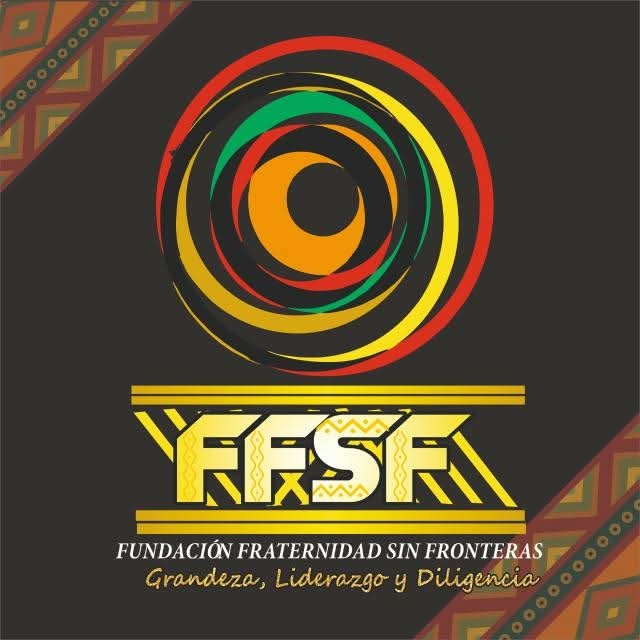
Trabajamos por la paz territorial, la educación, la cultura, el liderazgo y el fortalecimiento de las comunidades afrodescendientes, generando oportunidades que transforman vidas.
La Fundación Fraternidad Sin Fronteras nació en el año 2010 como una iniciativa de compromiso social, solidaridad y amor por la comunidad, con el propósito de construir una sociedad más justa, inclusiva y equitativa, donde todas las personas tengan oportunidades para vivir con dignidad y ejercer sus derechos.
Desde sus inicios, trabaja por el bienestar de las comunidades, especialmente de la población afrodescendiente, los niños, las niñas, las familias y las personas en condición de vulnerabilidad, promoviendo la protección de los derechos humanos, el fortalecimiento familiar, la identidad cultural y el valor de los saberes ancestrales.
Hoy continúa desarrollando acciones sociales, educativas, culturales y comunitarias, convencida de que la solidaridad y el trabajo colectivo transforman vidas, siembran esperanza y abren caminos hacia un futuro con más oportunidades para todos.
Grandeza, Liderazgo y Diligencia para transformar comunidades.
Los principios que orientan nuestro trabajo y el futuro que queremos construir.
Promover el bienestar, la igualdad y el reconocimiento de los derechos de la comunidad afrodescendiente de Cartago y la región, mediante la formación, el emprendimiento, la gestión social y la preservación de la cultura.
Ser una organización referente en el Valle del Cauca por su trabajo en pro de la equidad étnica, la justicia social y la difusión de la identidad afrocolombiana.
Conoce las actividades con las que transformamos nuestra comunidad.
Un espacio de solidaridad y apoyo alimentario para nuestra comunidad.
Ver fotografías →Jardín ancestral gestionado por la profesora Sofía Vélez, con el apoyo del Plan Padrino, los niños del colegio Holguín Garcés y la Fundación Fraternidad Sin Fronteras.
Ver fotografías →La Fundación lidera actividades deportivas como aeróbicos que ayudan a conservar una buena salud.
Ver fotografías →En esta gran fecha, la Fundación realiza esfuerzos para llevar alegría a muchos niños mediante un detalle durante las novenas navideñas.
Ver fotografías →Un espacio de aprendizaje y creatividad que promueve nuevas habilidades en la comunidad.
Ver fotografías →Una actividad de unión y solidaridad para compartir con nuestra comunidad.
Ver fotografías →Un espacio de encuentro comunitario que promueve la cultura, la integración y el disfrute del cine.
Ver fotografías →Cada aporte nos ayuda a seguir transformando vidas y construyendo oportunidades para niños, jóvenes, mujeres y comunidades vulnerables.
Con tu apoyo fortalecemos nuestros programas sociales.
Banco: Banco Agrario de Colombia
Cuenta de Ahorros: 4-697-83-00423-0
Titular: Fundación Fraternidad Sin Fronteras
NIT: 900345711-4
Cada aporte fortalece nuestros programas sociales, educativos, culturales y comunitarios, beneficiando a niños, jóvenes, mujeres y familias en situación de vulnerabilidad. Tu solidaridad transforma vidas.
Gracias al apoyo de instituciones, organizaciones y personas solidarias, seguimos construyendo oportunidades para nuestras comunidades.
Juntos transformamos vidas y construimos oportunidades para nuestra comunidad.
Apoyamos a las familias y personas que más lo necesitan.
Promovemos espacios de aprendizaje y formación comunitaria.
Impulsamos la unión, la participación y el bienestar social.
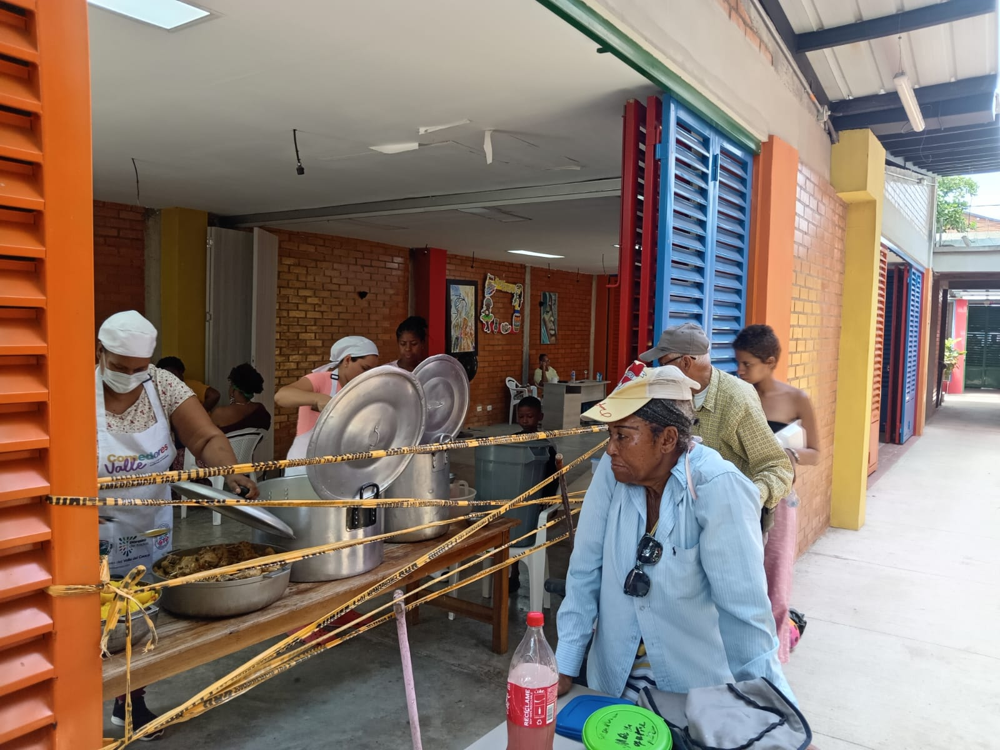
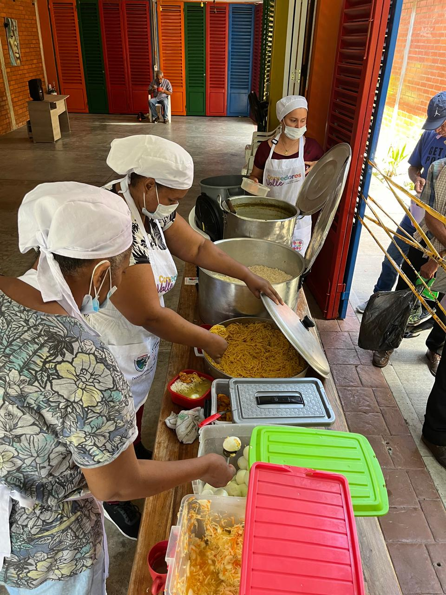
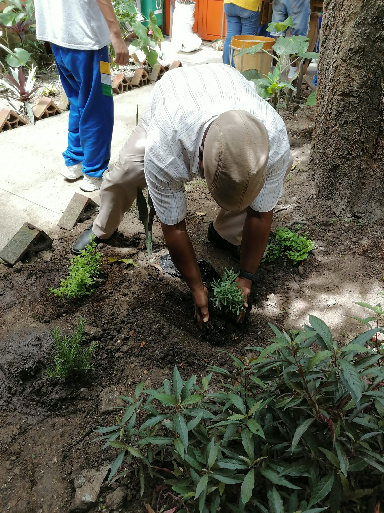
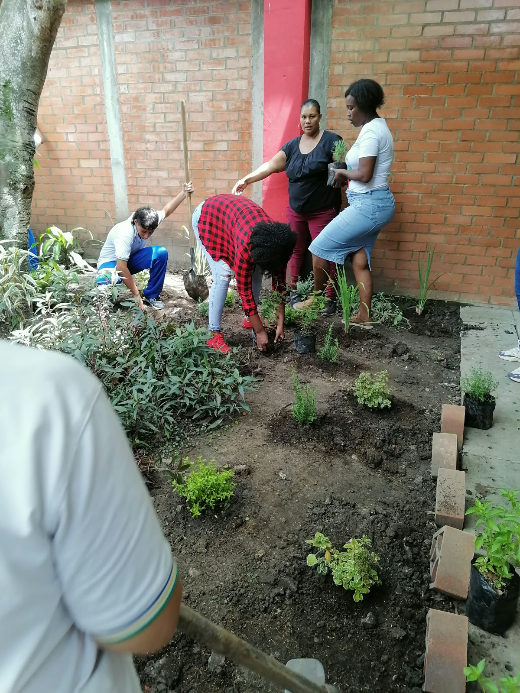
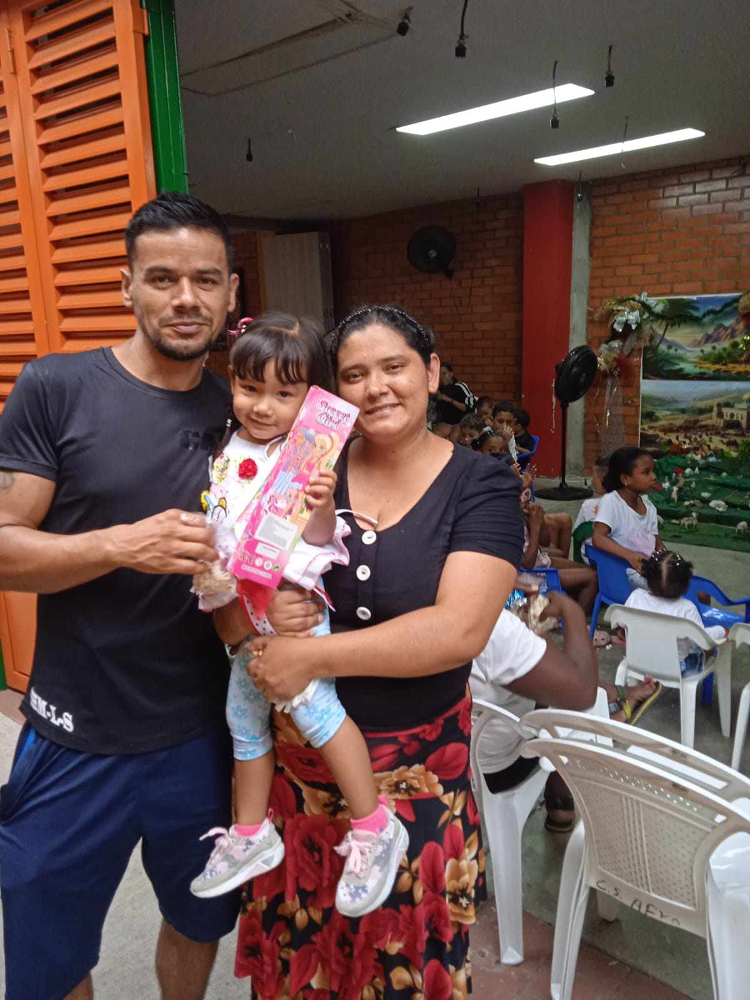
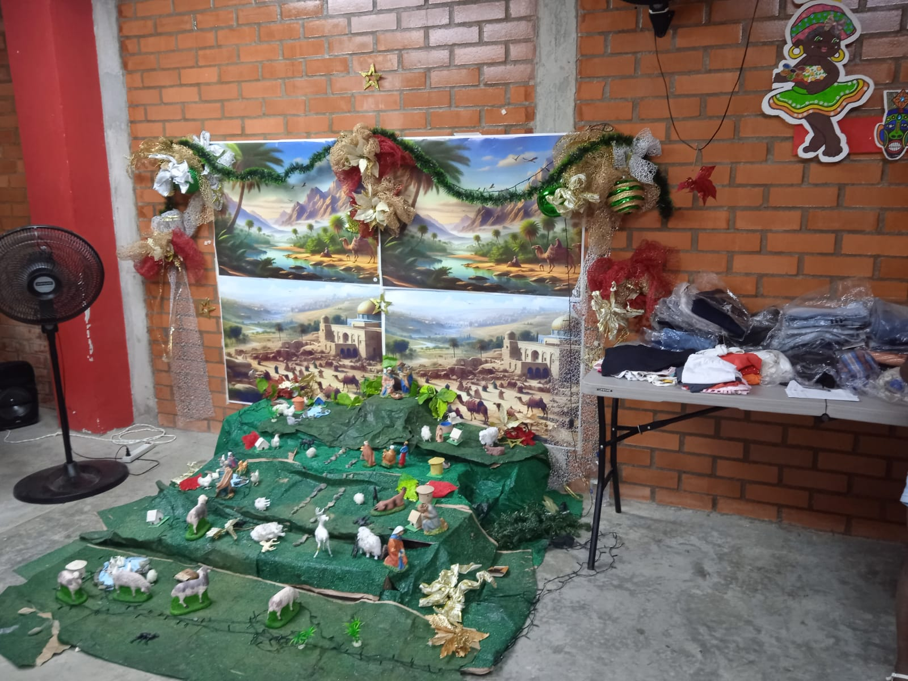
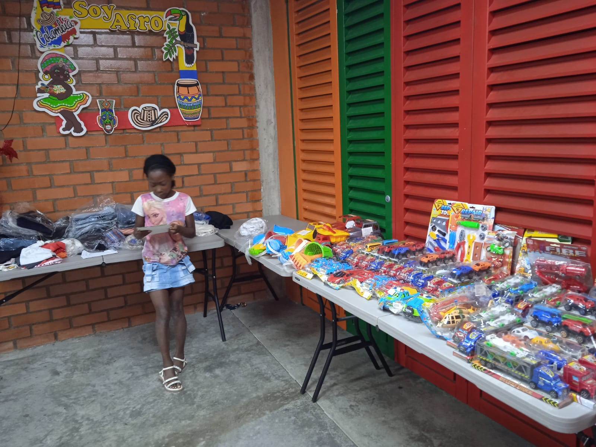
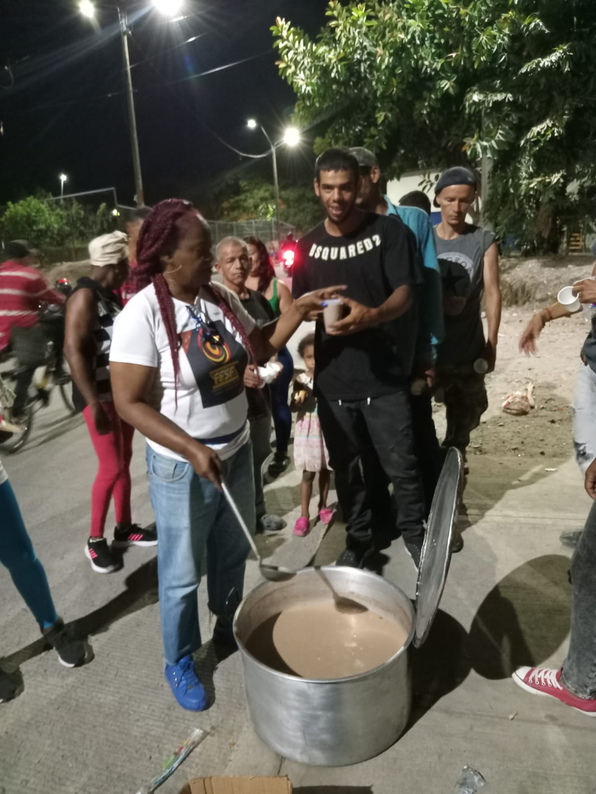
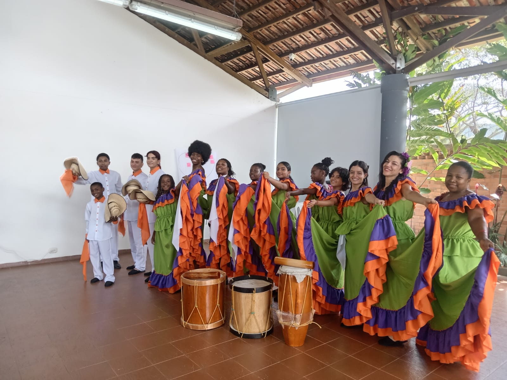
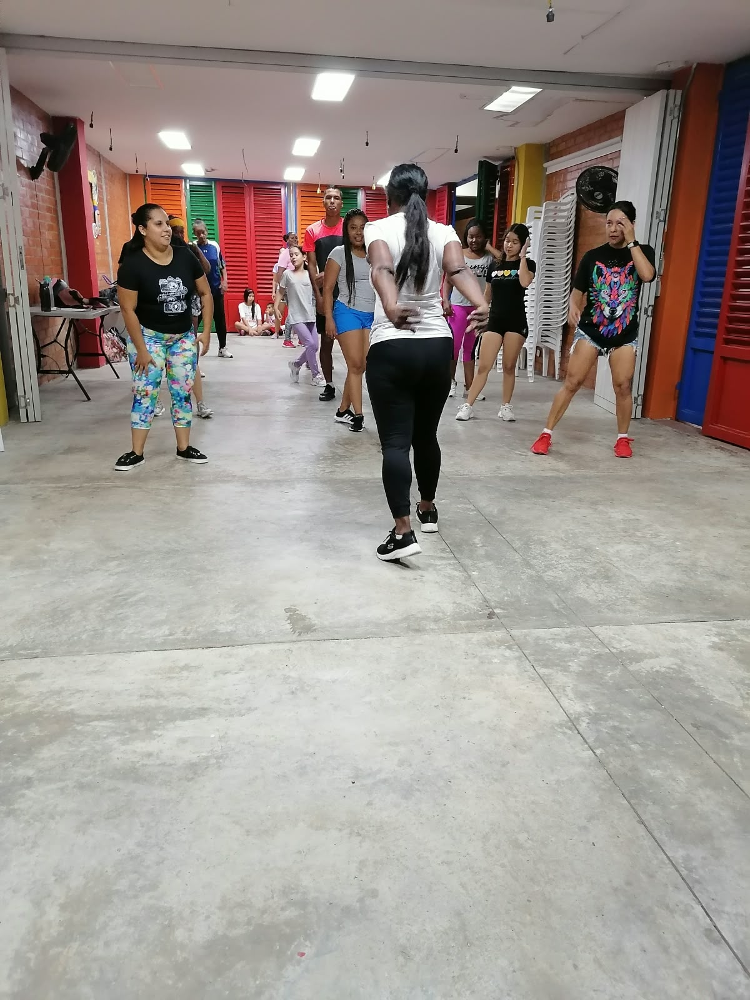
Estamos aquí para escucharte y trabajar juntos por nuestra comunidad.
Transversal 5B #15-68
Cartago, Valle del Cauca
Lunes a viernes
8:00 a. m. - 5:00 p. m.